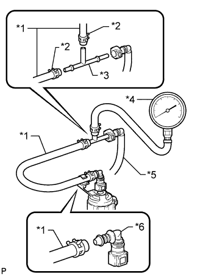

ТОПЛИВНАЯ СИСТЕМА ДВИГАТЕЛЯ > ПРОВЕРКА БЕЗ СНЯТИЯ С АВТОМОБИЛЯ |
| 1. ПРОВЕРЬТЕ РАБОТУ ТОПЛИВНОГО НАСОСА И ОТСУТСТВИЕ УТЕЧКИ ТОПЛИВА |
Подсоедините портативный диагностический прибор к DLC3.
Установите замок зажигания в положение ON (ВКЛ).
Включите портативный диагностический прибор.
Войдите в следующие меню: Powertrain / Engine and ECT / Active Test / Activate the Fuel Pump Speed Control.
Проверьте работу топливного насоса.
Проверьте давление топлива в трубке подвода топлива топливной магистрали. Убедитесь, что слышно, как топливо поступает в топливный бак.
В противном случае проверьте интегрированное реле, топливный насос, ЕСМ и разъем проводов.
Проверьте, нет ли утечек топлива (Нажмите здесь).
| 2. ПРОВЕРЬТЕ ДАВЛЕНИЕ В ТОПЛИВНОЙ СИСТЕМЕ |
Проверьте напряжение аккумуляторной батареи (Нажмите здесь).
Сбросьте давление в топливной системе (Нажмите здесь).
Отсоедините провод от отрицательного вывода аккумуляторной батареи.
Отсоедините топливный шланг (Нажмите здесь).
|  |
Установите SST (датчик давления), как показано на рисунке.
| *1 | SST (шланг) |
| *2 | SST (фиксатор) |
| *3 | SST (тройник) |
| *4 | SST (измерительный прибор) |
| *5 | Шланг подачи топлива |
| *6 | Разъем топливопровода |
Тщательно удалите остатки бензина.
Вновь подсоедините провод к отрицательному выводу аккумуляторной батареи.
Включите топливный насос.
Подсоедините портативный диагностический прибор к DLC3.
Установите замок зажигания в положение ON (ВКЛ).
Включите портативный диагностический прибор.
Войдите в следующие меню: Powertrain / Engine and ECT / Active Test / Active the Fuel Pump Speed Control / ON.
Измерьте давление в топливной системе.
Запустите двигатель.
Измерьте давление в топливной системе.
Выключите двигатель.
Убедитесь, что указанное значение давления в топливной системе сохраняется в течение 5 минут после остановки двигателя.
Отсоедините провод от отрицательного (-) вывода аккумуляторной батареи и осторожно снимите SST и разъем топливопровода, чтобы предотвратить разбрызгивание бензина.
Подсоедините топливный шланг (Нажмите здесь).
Проверьте, нет ли утечек топлива (Нажмите здесь).